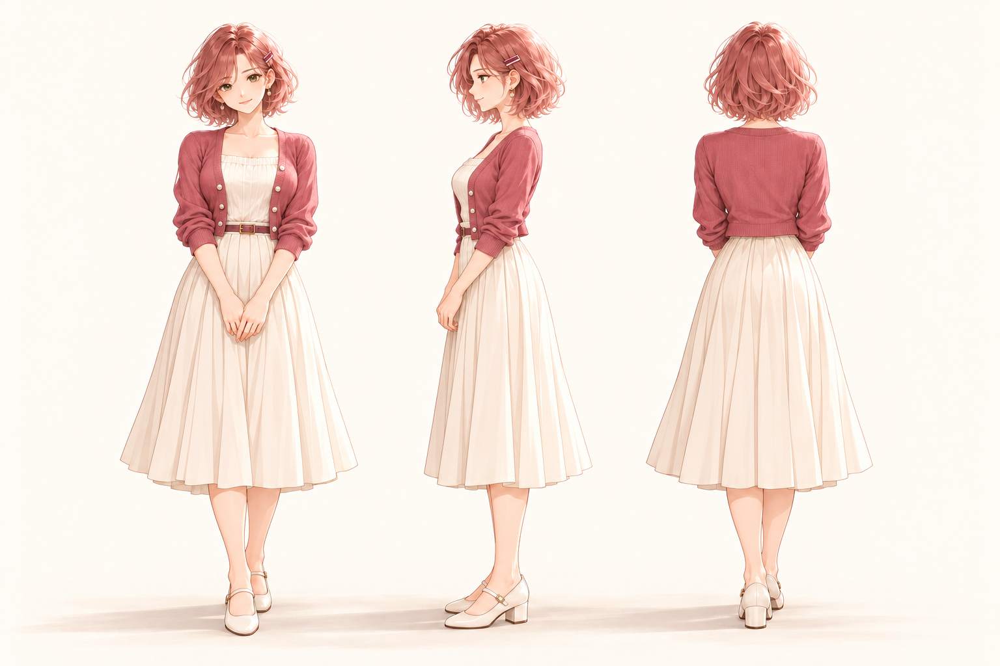
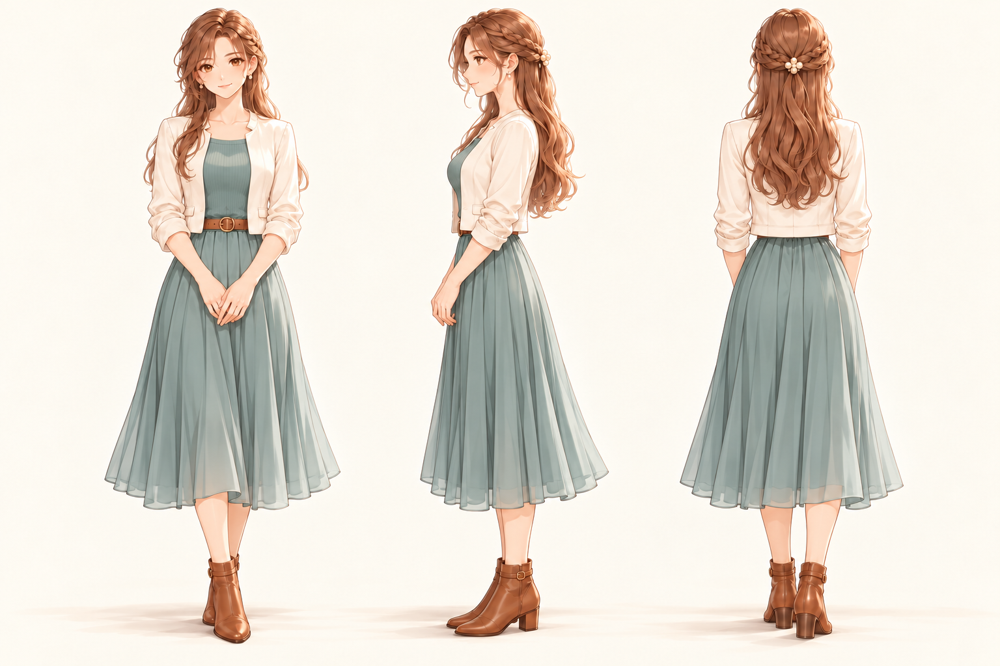
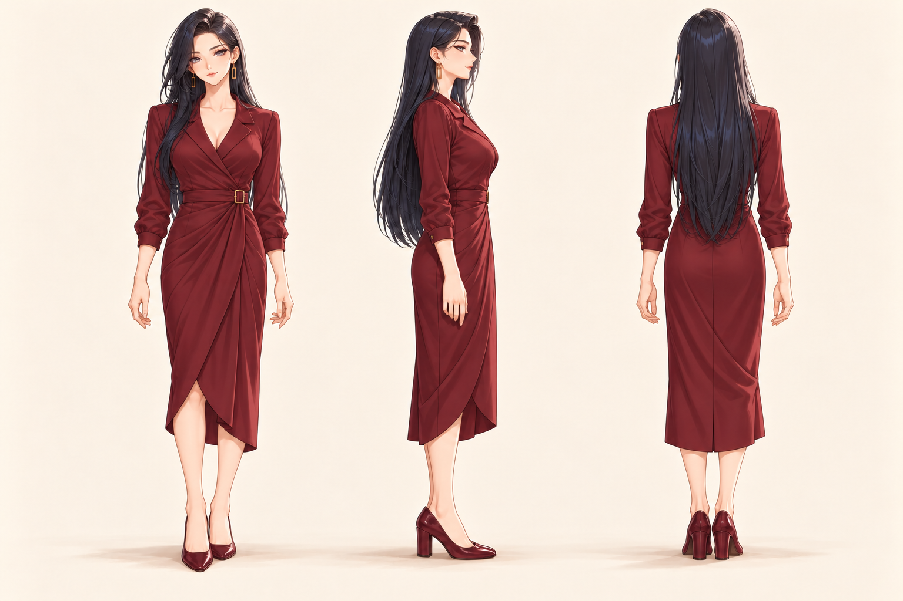
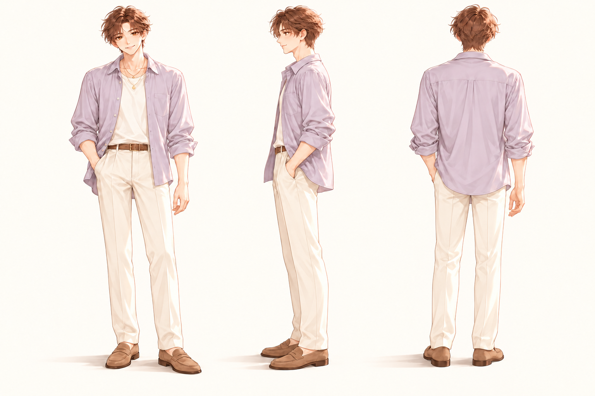
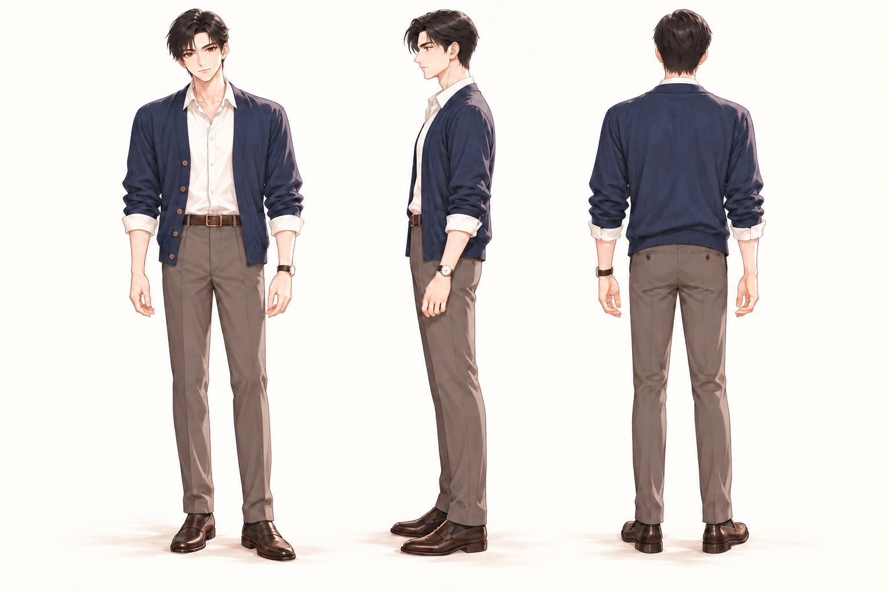
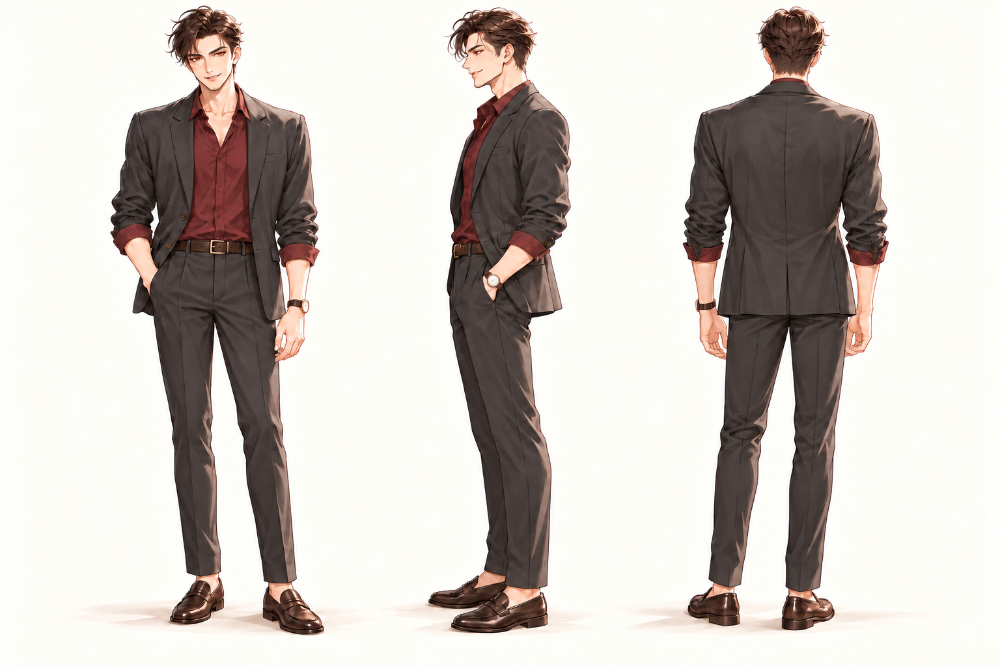

女助理 · 甜美机灵158 cm
性格方向：《出包王女》梦梦
甜美亲近、机灵俏皮、善于观察；小巧而自然的成年比例。
158cm · 小巧成年比例玫瑰粉短发自然收窄胯部莓粉开衫与奶油裙
延续现有助理的柔和二维插画风格，保留不同身高与正常成年比例。女性胯部自然收窄；秦彻方向重绘为红瞳、玩味坏笑、无胡须的形象。每张从左到右为正面、侧面、背面，点击图片可查看大图。
梦梦158 · 亚丝娜163 · 女帝175 · 祁煜180 · 黎深184 · 秦彻188 cm。左右滑动查看全部人物。






身高为原创候选的设计设定；发型、鞋跟与姿态会影响视觉高度。
甜美亲近、机灵俏皮、善于观察；小巧而自然的成年比例。
温柔可靠、坚定果断、认真自律；身形匀称，略高于甜美机灵方向。
自信高傲、从容有主见；女性中最高，修长自然，收窄胯部轮廓。
艺术气质、灵动健谈、细腻敏感；身形修长轻盈。
克制理性、专业细致、沉稳可靠；体态挺拔、匀称有力量。
自信笃定、直率果断；红瞳、微挑眉眼和玩味坏笑，面部干净无胡须。